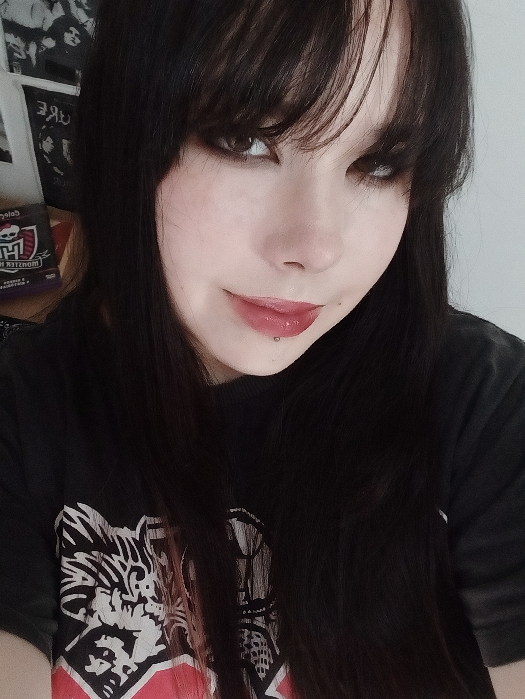

Me chamo Maria Luiza Mendes Silva, tenho 17 anos, estudo na escola técnica
Professora Ilza Nascimento Pintus, faço o curso de Desenvolvimento de
Sistemas e este é meu portfólio. Minhas principais softskills são:
Comunicação e flexibilidade
Minhas principais hardskills são:
Programação em SQL, edição de Fotos e ilustração em Ibis Paint.

Foto minha tirada recentemente
Na aba "Pessoal" você encontrará gostos pessoais meus, e na área "Acadêmica"
encontrará meus projetos durante meus três anos de curso técnico
Sou apaixonada por filmes, desenhos, músicas e jogos. Meus hobbies favoritos são o desenho, a
escrita e o estudo.
As músicas que mais escuto são do gênero indie rock e post punk, e meus filmes favoritos são os de
ficção científica, drama e fantasia.